ホーム ＞ てくてくダイヤリー
日本語 ・ English ・ Deutsch ・ 한국어 ・ 繁體中文 ・ Español ・ Italiano ・ Français
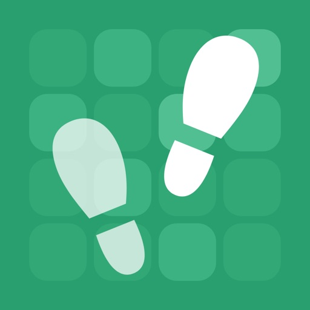
持って歩くだけで、
1日が日記になる。
歩いた歩数と、行った場所と、その日の予定や写真。iPhone を持って歩くだけで、カレンダーと日記に自動で残ります。記録はすべて iPhone の中だけ。サーバーには送りません。
- 無料で始められる
- 広告なし
- 記録は iPhone の中だけ
- 8言語
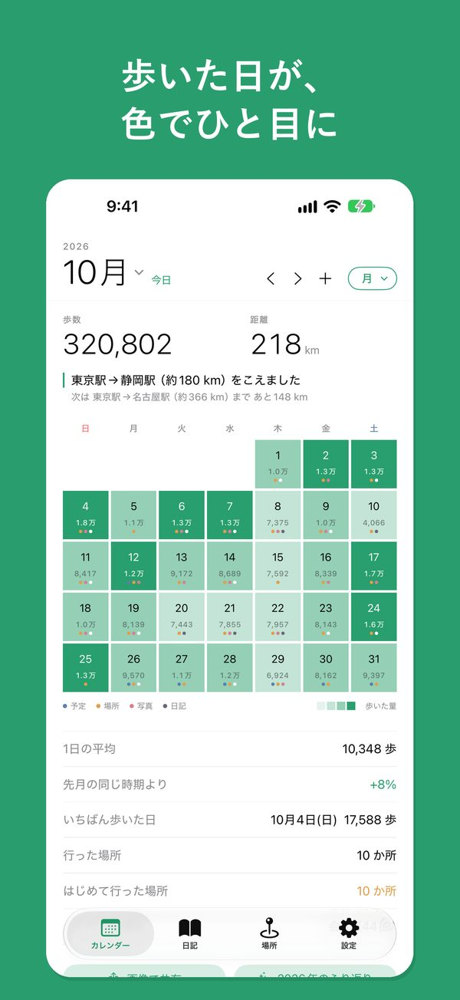
こんな人に
てくてくダイヤリー は、こんな場面で役に立ちます。
- 旅行・おでかけ行った場所と写真が、その日のページにまとまって残ります。
- 散歩・ウォーキング歩いた日が色で残るので、続けるほど楽しくなります。
- 日記が続かない人ボタン1つで、その日の記録が日記に入ります。
- 小さい字が見えにくい人文字が大きく太くなる「老眼モード」があります。
できること
行った場所と滞在時間が、自動で残る
何も操作しなくても、1日が終わるとその日のページができています。どこにいて、何分いたか。そのとき撮った写真と天気も並びます。
歩いている途中に通りすぎただけの場所は、自動で隠します。残ってしまった場所も、手でかんたんに消せます。
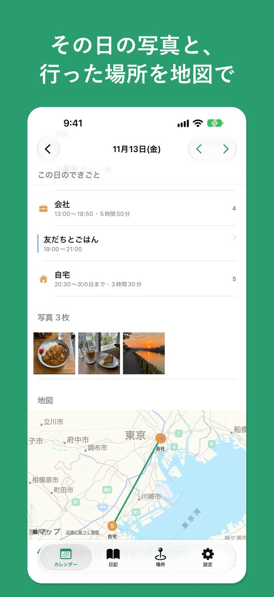
予定と「実際に行った場所」を並べて見る
iPhone のカレンダー（Google カレンダーなども）の予定と、実際にいた時間を並べて表示します。月・週・5日・2日・1日を切り替えられ、予定の追加や編集もこのアプリの中でできます。
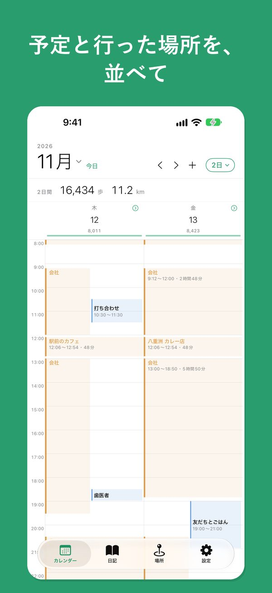
歩いた日が、色でひと目に
カレンダーの1日1日が、歩数に合わせて色の濃さで変わります。「先週はよく歩いたな」が、数字を読まなくても分かります。
歩いた距離は「東京駅→静岡駅（約180km）をこえました」のように、地名でたとえて出します。数字が、ちょっとした旅になります。
ボタン1つ。書かなくても残る日記
日記の画面でボタンを押すと、その日の歩数・行った場所・予定・天気が本文に入ります。一言足したい日だけ、足せばいい。
よく行く場所は、ポチポチ押すだけで「#駅前のカフェ」のようにハッシュタグで残せます。気分は顔のマーク5つから選ぶだけ。
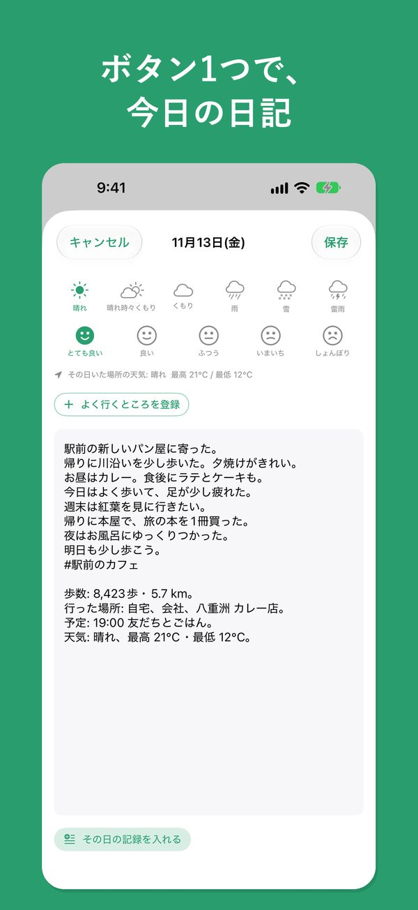
足あとの地図と、1年のふり返り
長くいた場所のランキングや、足あとの地図が見られます。1年前の同じ日に、どこにいて何を撮ったかも。
月のまとめや1年のふり返りは、画像にしてそのまま SNS に投稿できます。
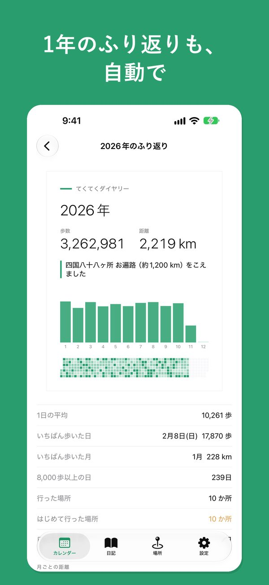
老眼モード、12色のテーマ、ダークモード
細い字・小さい字が読みにくい人のために「老眼モード」を入れました。文字が大きく太くなり、色のコントラストもはっきりします。文字の大きさだけを3段階で変えることもできます。
テーマの色は12色から。ダークモードにも対応しています。ホーム画面とロック画面のウィジェットもあります。
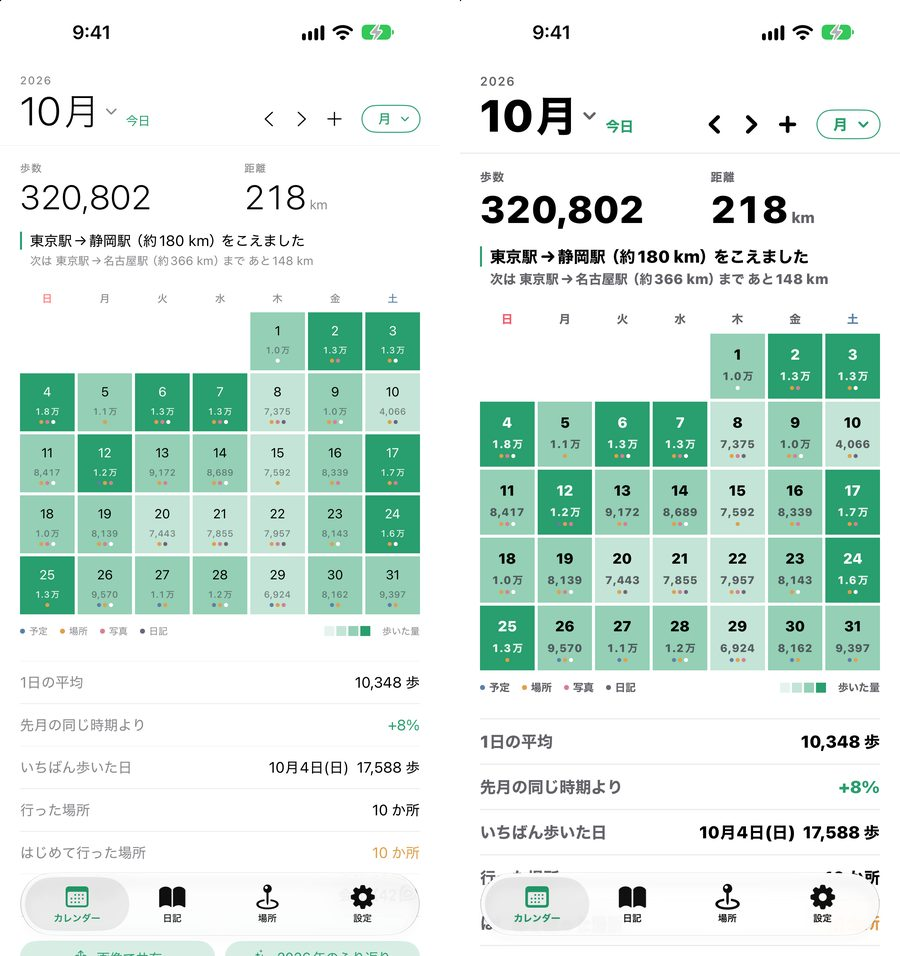
位置情報を「常に」にしても、電池にやさしい
GPS を動かしっぱなしにはしません。iPhone にもともと入っている省電力の仕組みが「着いた」「離れた」と知らせてくれたときだけ、目を覚まして書きとめます。歩数も、iPhone がもともと数えているヘルスケアの数字を読むだけです。
歩いた道をこまかく残したいときだけ、設定で「歩いた道すじをこまかく記録」をオンにできます（このときは電池を多めに使います）。
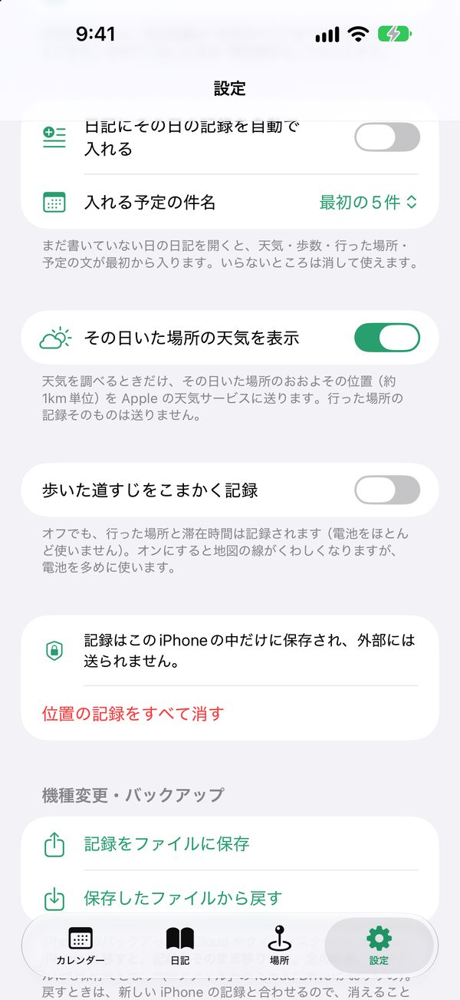
動画
画面
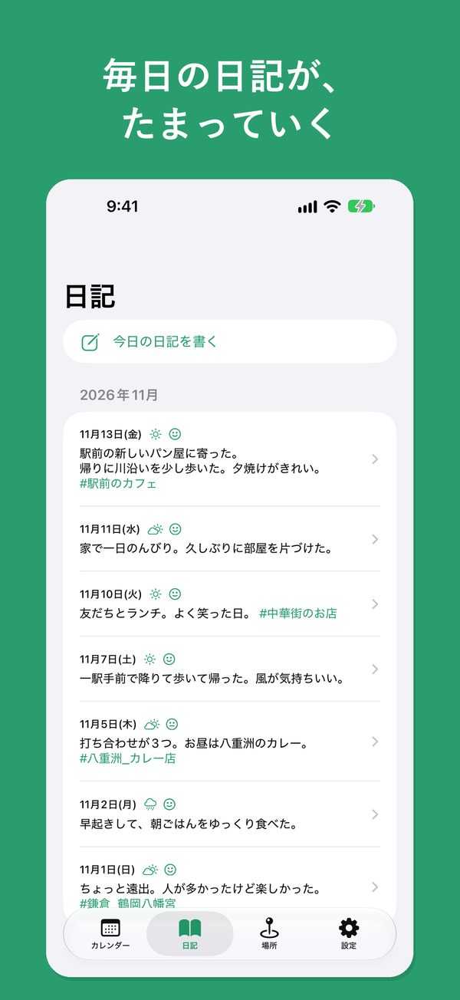
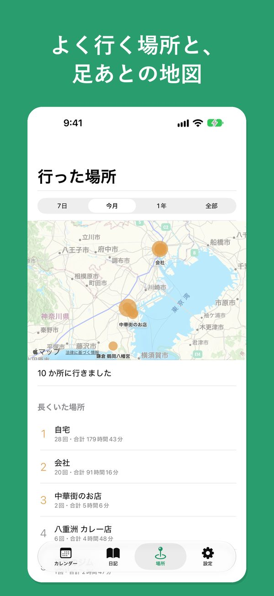
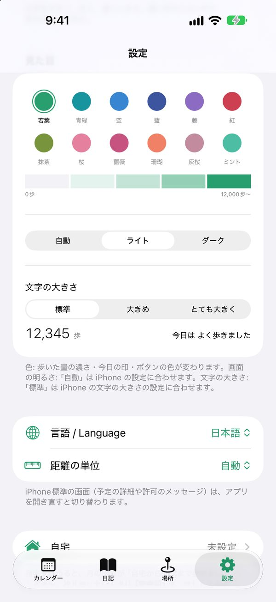
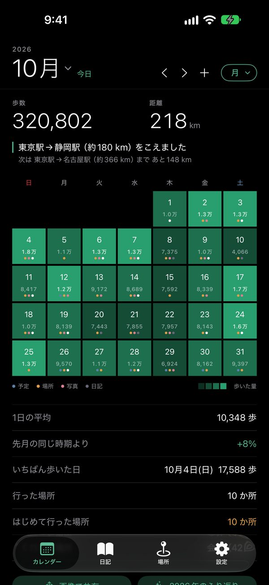
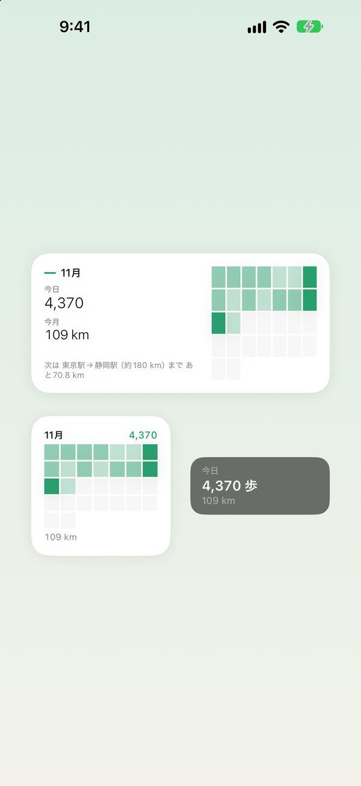
料金
プライバシー
歩数も、行った場所も、日記も、この iPhone の中だけに保存します。サーバーには送りません。天気を調べるときだけ、約1km の範囲にぼかした位置を Apple の天気サービスに送ります。機種変更のときは、記録を書き出して新しい iPhone で読み込めます。
- 対応
- iPhone（iOS 17 以上）
- 言語
- 日本語・英語・ドイツ語・韓国語・中国語（繁体字）・スペイン語・イタリア語・フランス語
- カテゴリ
- ライフスタイル
- 料金
- 無料（アプリ内課金 ¥680）
よくある質問・サポート
てくてくダイヤリーは、どんなアプリですか？
iPhone を持って歩くだけで、歩数・行った場所・予定・写真・天気が、カレンダーと日記に自動で残るアプリです。日記が続かない人や、散歩・旅行の記録を残したい人に向いています。
料金はかかりますか？
無料で始められます。直近32日の記録は、無料で全部見られます。それより前の記録は、¥680 の買い切りでずっと見られます。毎月の支払いと広告はありません。
記録は、どこに保存されますか？
この iPhone の中だけです。サーバーには送りません。天気を調べるときだけ、約1kmの範囲にぼかした位置を Apple の天気サービスに送ります。
位置情報を「常に」にすると、電池が減りませんか？
GPS を動かしっぱなしにはしません。iPhone にもともと入っている省電力の仕組みが「着いた」「離れた」と知らせたときだけ記録します。歩いた道すじをこまかく残す設定をオンにしたときだけ、電池を多めに使います。
字が小さくて読みにくいのですが。
「老眼モード」をオンにすると、文字が大きく太くなり、色のコントラストもはっきりします。文字の大きさだけを3段階で変えることもできます。
行った場所が記録されません。
iPhone の「設定」→「てくてく」→「位置情報」を「常に」にしてください。「使用中のみ」では、アプリを閉じている間の場所が記録されません。
通っただけの場所が記録されました。
短い滞在で、その間ずっと歩いていたものは自動で隠します。残ってしまったときは、1日の画面でその滞在を左にスワイプすると消せます。長押しで「通っただけ（隠す）」も選べます。
歩数が出ません。
ヘルスケア → 右上の顔 →「アプリ」→「てくてく」で、歩数と距離の読み取りをオンにしてください。
購入を復元するには？
設定画面の購入の欄にある「購入を復元」を押してください。
不具合やご要望は、こちらへお送りください。お使いの端末と iOS のバージョンを書いていただけると助かります。
MORK STUDIO：morkstudio@icloud.com
開発記
てくてくダイヤリー
歩数・行った場所・予定・写真・天気が、iPhone を持って歩くだけで1日の日記になるアプリ。記録は iPhone の中だけに保存。老眼モード、12色のテーマ、ウィジェットにも対応。
English
TekuTeku automatically keeps your steps and the places you visit in a calendar and diary. Everything is stored only on your iPhone.
Places aren’t being recorded.
Go to iPhone Settings → TekuTeku → Location and choose “Always”. With “While Using the App”, places aren’t recorded while the app is closed.
A place I only walked past was recorded.
Short stays where you kept walking are hidden automatically. If one remains, swipe it left in the day view to delete it, or long-press it and choose “Just passing (hide)”.
Steps don’t appear.
In the Health app, tap your profile (top right) → Apps → TekuTeku and turn on Steps and Walking Distance.
How do I restore my purchase?
Tap “Restore Purchase” in the purchase section of the app’s Settings.
Support: morkstudio@icloud.com ・ Privacy Policy